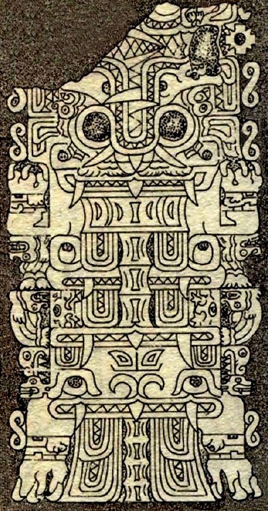

Chavín (1200 a.C. - 200 a.C.)
La cultura Chavín se considera la cultura matriz de la zona andina. El estilo artístico lo va a protagonizar la religión, en este caso, el culto a los felinos, las aves y las serpientes. Creando un cosmos compuesto de infinitas contraposiciones duales y complementarias que dan como resultado un arte rígido y conceptual.
Chavín de Huantar
La arquitectura y la escultura se pone al servicio de una serie de metáforas para explicar los conceptos abstractos que forman la cosmología chavín. Chavín de Huantar se ha considerado la capital, punto estratégico, elevado y entre dos ríos. Es, además, un centro ceremonial.
El dios sonriente
En las edificicaciones del yacimiento anterior se encuentran, en las cornisas, estos motivos decorativos a caballo entre la escultura y el relieve. Representa el poder mediador de dos fuerzas constrarias, el jaguar y la serpiente.
Obelisco de Tello
Representación de dos figuras gemelas en cada cara, pero las diferenciasn algunos rasgos. Es una divinidad dual, con sexos opuestos.
Estela Yauya
La siguiente estela, que recibe el nombre de Julio C. Tello, su descubridor en 1919, es un monoliro de gran tamaño. Sobre su superficie se haya la figura labrada de un ser mítico. Existen diversas interpretaciones. La más aceptada es que se trata de una divinidad ictiomorfa basandose en los diseños del espinazo de un pez y las estilizadas escamas. Otras interpretaciones identifican a este ser como un caimán o con un felino volador, siendo en este caso las escamas las plumas de las alas.
Friso de los Falcónidos
Este friso de las falcónidas o de los cóndores se encuentra en la fachada del Templo Nuevo encontramos esta portada entre dos columnas cilíndricas de piedra. Aparecen grabadas ocho aves de perfil, siete de las cuales miran a la izquierda y una a la derecha.
Estela de Raimondi
 Es el dios de las dos varas. También aparece en la Puerta del Sol de Tiahuanaco. Julio C. Tello resalizó una minuciosa descripción de la Estela. Según su criterio, la imagen representaba a un dios jaguar coronado con una enorme mitra o tacado ritual, y sería un antecedente del dios Viracocha. Actualmente esta tesis se cuestiona frente a la teoría que lo identifica como un dios felino y ave humanizado.
Es el dios de las dos varas. También aparece en la Puerta del Sol de Tiahuanaco. Julio C. Tello resalizó una minuciosa descripción de la Estela. Según su criterio, la imagen representaba a un dios jaguar coronado con una enorme mitra o tacado ritual, y sería un antecedente del dios Viracocha. Actualmente esta tesis se cuestiona frente a la teoría que lo identifica como un dios felino y ave humanizado.